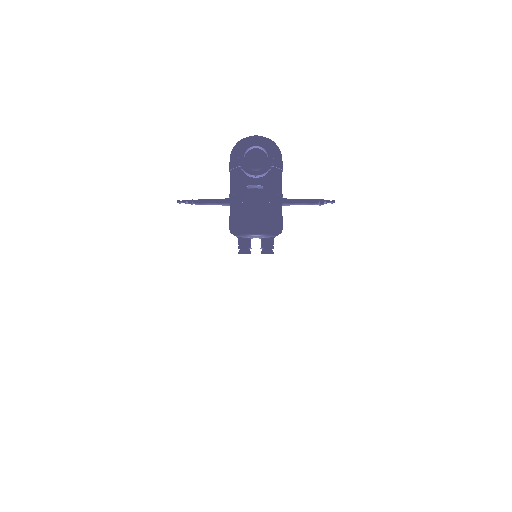

3. Re-texturing a mesh (10 points)
Re-texturing the given Mesh with color1 = [1, 1, 1] and color2 = [0, 1, 1].

Goals: In this assignment, we learn the basics of rendering with PyTorch3D, explore 3D representations, and practice constructing simple geometry.
360-degree render of the given cow model.
Dolly Zoom effect with a provided cow model.
Simple tetrahedron from multiple viewpoints.
Number of vertices: 4, Number of faces: 4.
Showcasing a cube from different angles.
Number of vertices: 8, Number of faces: 6.
Re-texturing the given Mesh with color1 = [1, 1, 1] and color2 = [0, 1, 1].
Various camera transformations on a 3D model.
For Transformation 1: Rotation around the Z axis by 90 degrees. Translation 0 units.
For Transformation 2: No Rotation. Translation along z axis by -3 units.
For Transformation 3: No Rotation. Translation along x axis by 0.5 units.
For Transformation 4: Rotation around the Y axis by 90 degrees. Translation 3 units in X and Z direction.
Point clouds from RGB-D images.

Torus and Hyperboloid.
Torus and Hyperboloid.
360 view of a Minion.
